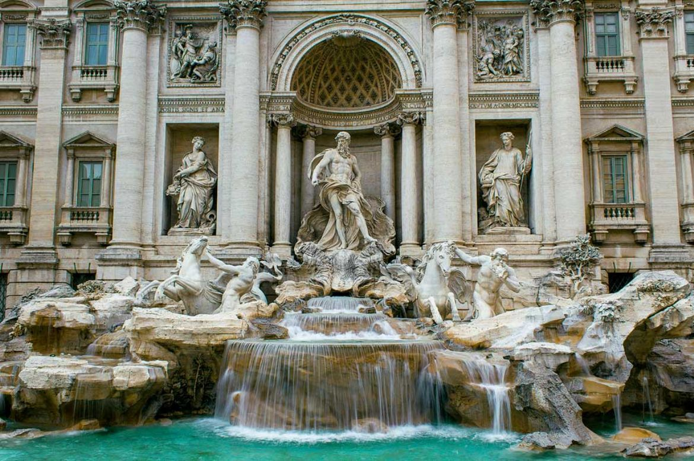
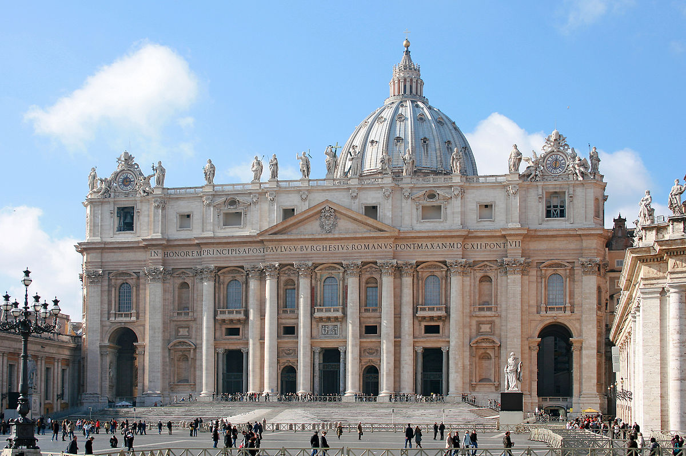
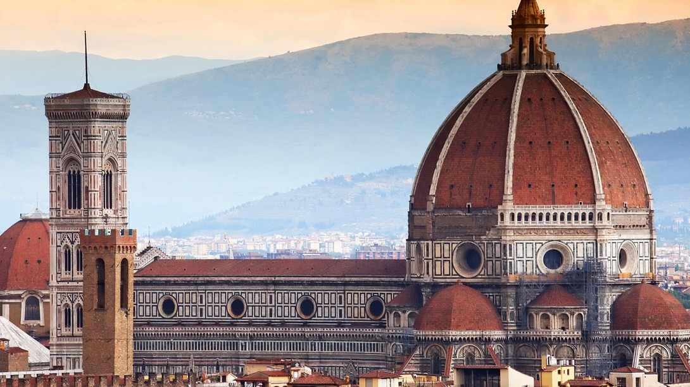

Renașterea
Orașe
Florența
Veneția
Roma
Logare
Excursii
Galerie
Principalele atracții turistice
Piata San Marco
Canal Grande

Fântâna di Trevi
Signoria

Bazilica Sfântului Petru
Galeria Uffizi

Domul Santa Maria del Fiore
Palatul Dogilor
Ponte Vecchio